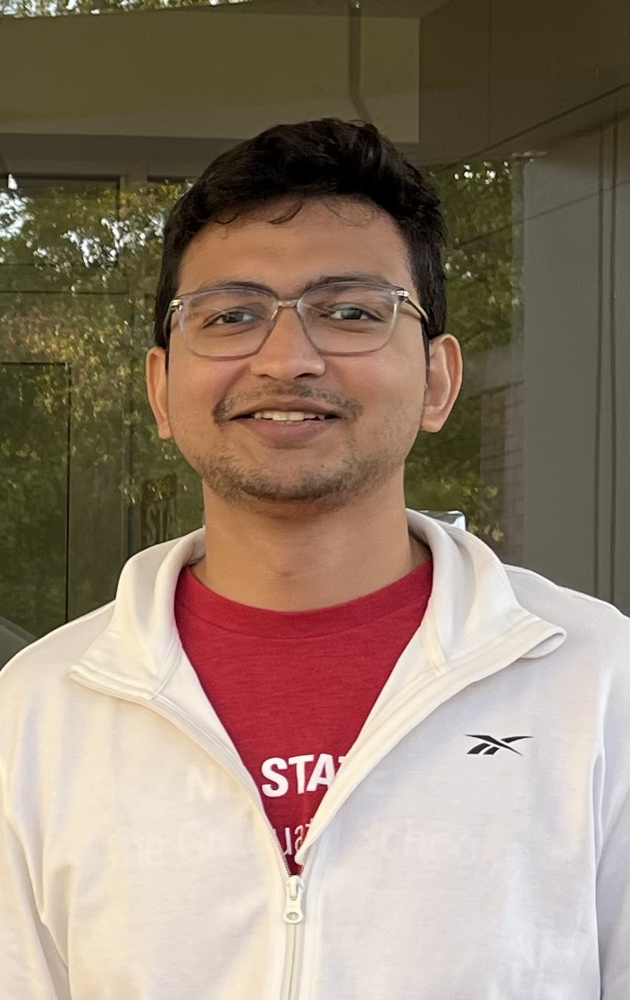
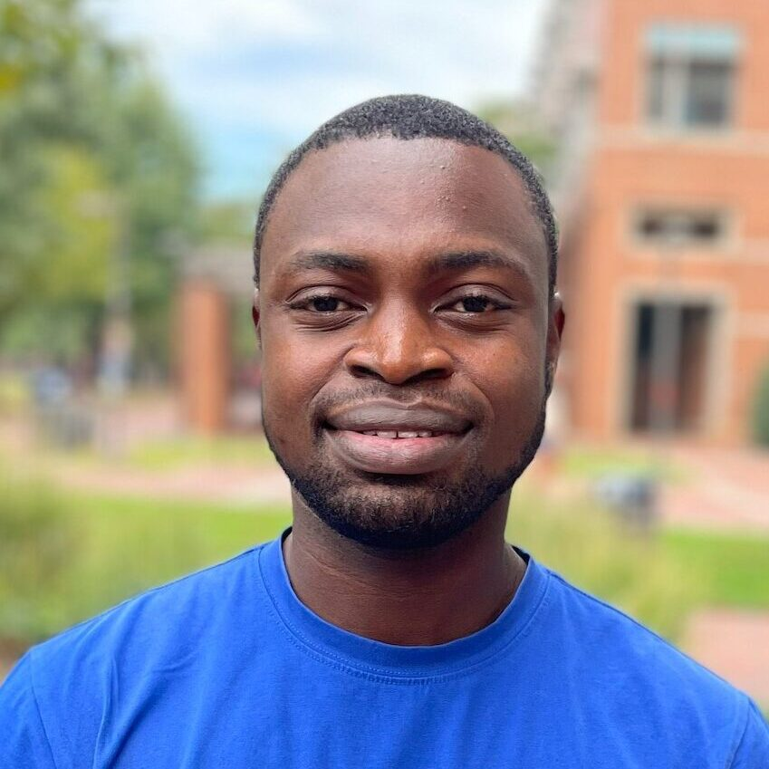

|
People
Group Members
|
 |
Sayeedul Sheikh
Ph.D. Student (1st year)
Education: B.S. Chemical Engineering and Electrical Engineering, Indian Institute of Technology Kanpur (2026).
Research: Data-driven nonlinear systems and control.
Hobbies: Reading fiction novels and running.
|
|
|
Dr. Xiuzhen Ye [LinkedIn]
Postdoctoral Scholar (since October 2024)
Education: Ph.D. Electrical Engineering, University of Sheffield (2023), advised by Iñaki Esnaola, thesis: Sparsity and Coordination Constraints on Stealth Data Injection Attacks; M.Sc. Electrical Engineering, South China University of Technology (2019), advised by Tianyao Ji; B.S. Smart Grid Information Engineering, Nanjing University of Posts and Telecommunications (2016).
Research: Data-driven observation and control using operator theory; control with safety and security concerns.
Hobbies: Born in Fujian, China, Xiuzhen enjoys exploring new things both in science and daily life. Chinese dancing and physical exercise have been her long-term hobbies since young; she was a dancer in her school's art troupe and a member of the university badminton team. Recently, she has developed interests in bouldering and control theory.
|
|
|
Moritz Woelk [LinkedIn]
Ph.D. Student (5th year)
Education: B.S. Chemical Engineering, University of Delaware (2022).
Research: Data-driven state-space modeling and state observation.
Hobbies: Playing soccer, weightlifting, and hanging out with friends.
|
|
|
Kyoung Min Kim [LinkedIn]
Ph.D. Student (6th year, co-advised with Xiaolei Fang since August 2025)
Education: M.S. Statistics, Seoul National University (2017); Mathematical Sciences, Korea Advanced Institute of Science and Technology (KAIST) (2012).
Research: Filtering theory and industrial prognostics.
Hobbies: Cooking, weightlifting, and judo.
|
|
 |
Damilola Fasiku [LinkedIn]
Ph.D. Student (4rd year)
Education: B.S. Chemical Engineering, Obafemi Awolowo University (2020).
Research: Distributed optimization for large-scale problems in black box.
Hobbies: Listening to music, playing soccer, and playing the piano.
|
|
|
Jarod E. Morris [LinkedIn]
Ph.D. Student (3rd year)
Education: B.S. Chemical Engineering, University of South Alabama (2024).
Research: Data-driven state-space modeling and optimal control theory.
Hobbies: Playing soccer, sketching, hiking, and weightlifting.
|
Group Alumni
Former Graduate Students
Former Undergraduate Students
Jesse Mindel (Fall 2025 - Spring 2026)
Angela Ni (Fall 2023 - Spring 2026), currently Ph.D. student at Carnegie Mellon University
Leyao Huang (Fall 2024 — Spring 2025)
Tyler Simpson (Fall 2024 — Spring 2025)
Nathan Johnson (Fall 2023 — Spring 2024)
Korin E. Honke (Fall 2022)
|